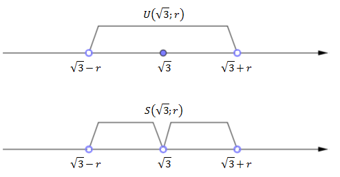

Definicja
Sąsiedztwem \(S(x_0;r)\) punktu \(x_0\) nazywamy przedział \((x_0 - r ,
x_0 + r)\backslash \{x_0\}\).
Sąsiedztwo punktu \(x_0\), to otoczenie punktu \(x_0\) bez tego punktu.
Zaznaczmy na osi liczbowej otoczenie i sąsiedztwo punktu \(\sqrt{3}\) o promieniu
\(r\). 
Otoczenie \(U(\sqrt{3};r)\) i sąsiedztwo \(S(\sqrt{3};r)\) punktu
\(\sqrt{3}\) o promieniu \(r\).